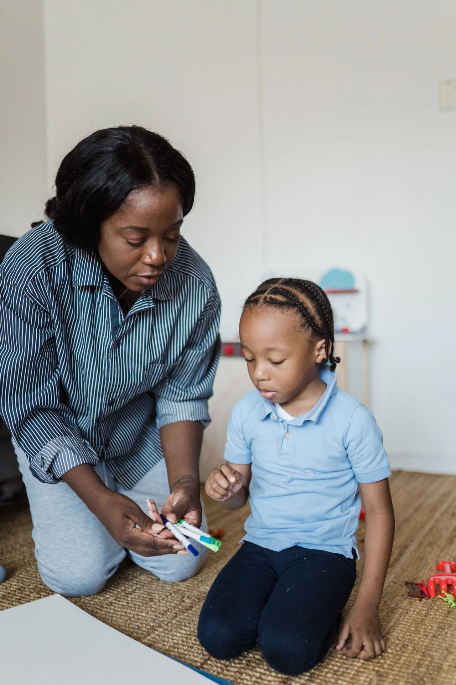
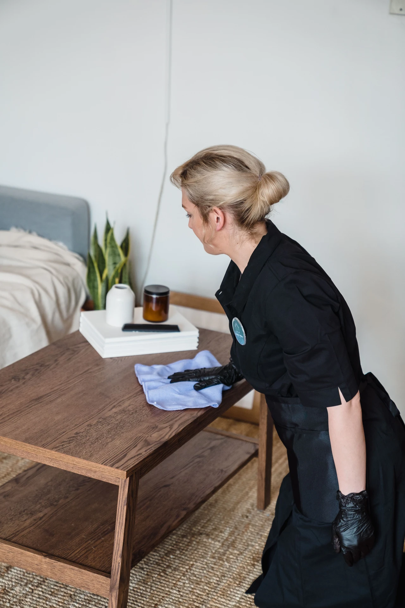
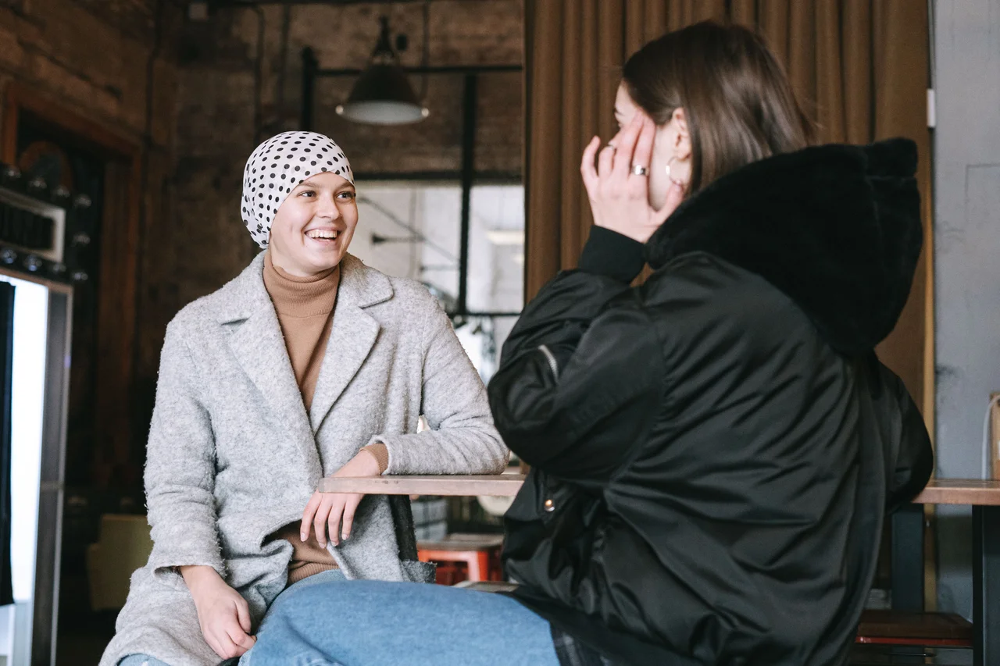

Nannies
Someone to help care for your children and support your family’s daily routine.
Explore nanniesIndividual people placement
Finding support starts with understanding your home. We help families and households find Nannies, Domestic support, Night Nurses and Housekeepers.
Your home. Your routine. Your needs.

How can we help?
Different homes need different kinds of help. Tell us what would make your day easier.
Someone to help care for your children and support your family’s daily routine.
Explore nannies
Help with cleaning and everyday household tasks, around the hours and duties you agree.
Explore domestic support
Help during the night, with the hours and household responsibilities discussed with you.
Explore night nurses
Welcome to The Chore Facilitator
You know your home best. We’re here to listen.
We are a placement agency helping families find support for everyday life. We get to know what you need before we start looking, and consider the work from the candidate’s side too.
A few clear steps
Share the role, routine and practical details that matter to you.
We discuss duties, hours and expectations before considering candidates.
When a candidate may suit the role, both sides can discuss the arrangement.
For candidates
Tell us about your experience, when you are available and the kind of work you would like to do.
Tell us about yourselfStart with what you know. We can talk through the details together.
Ask us a questionA conversation is a good place to start